The Shops at Le Marais
A slow walk past the prettiest storefronts in Paris
I've been quietly working my way through Rick Steves' travel writing (ricksteves.com), and somewhere along the way it rewired how I look at a place. One line from his book has stayed with me ever since:
It is humbling to see people who don't have the American Dream — they have their own.
— Rick Steves
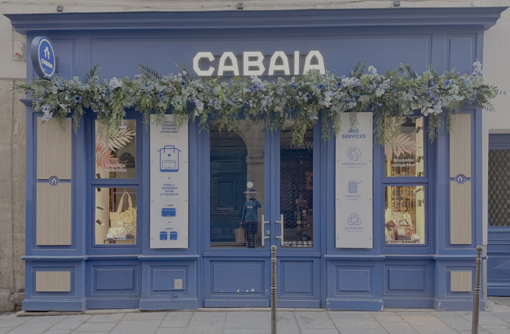
Rick Steves has documented Paris better than I ever could — the museums, the gardens, the late-night corners of the city. His Travel with Rick Steves podcast covers the Louvre, the Tuileries, and the nightlife in remarkable detail, with the patience of someone who genuinely loves the place. So I won't retread any of that.
What pulled me in instead was something smaller and more ordinary: the shops. Wandering through Le Marais, I kept stopping — not for what was inside, but for the storefronts themselves. The thought and effort Parisians put into a single devanture is almost unreasonable. A perfume house, a corner bakery, a bookshop the size of a closet — each one styled like it's the only shop on the street.
And the magic doesn't stop at the glass. Step inside and the interior is just as carefully composed as the exterior — the lighting, the shelving, the smallest details all of a piece. That's why a walk through Le Marais in the late evening is just as beautiful as one by day: the shops glow from within, the windows turn into little lantern-lit stages, and the whole quarter softens into something cinematic.
So this is a light one. Mostly pictures. Walk with me.
Devantures — The Storefronts
Le Marais is a maze of narrow medieval streets, and every turn hands you another perfectly composed facade. The colors, the lettering, the way the light catches the glass — none of it feels accidental.
 Léo & Ugo
Léo & Ugo
 Chevignon
Chevignon
 Eleven Paris
Eleven Paris
 Le Renard
Le Renard
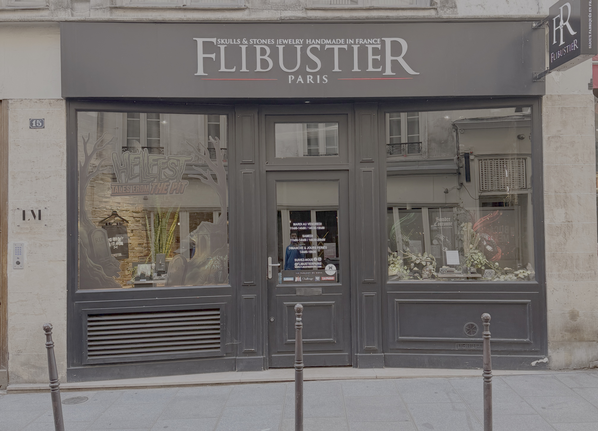
Le Flibustier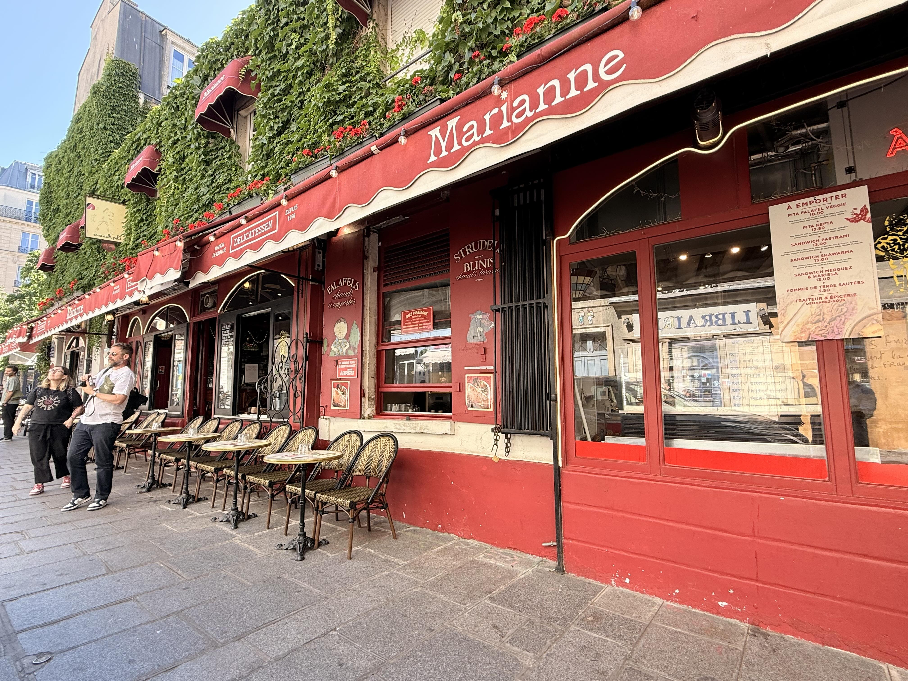
MarianneSweet Stops
You cannot walk five minutes here without a window full of pastry, gelato, or macarons stopping you mid-stride. The sweet shops dress themselves up like jewelry boxes — and somehow they earn it.
 Amorino — gelato shaped like a rose
Amorino — gelato shaped like a rose
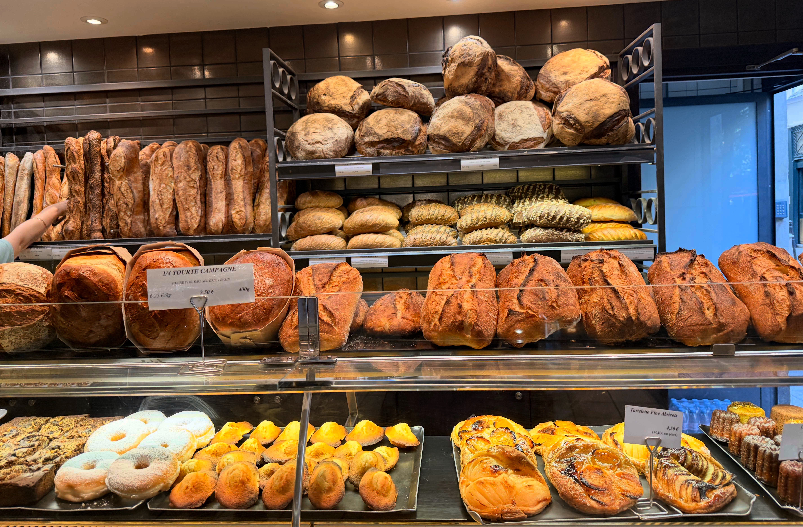
A neighborhood boulangerie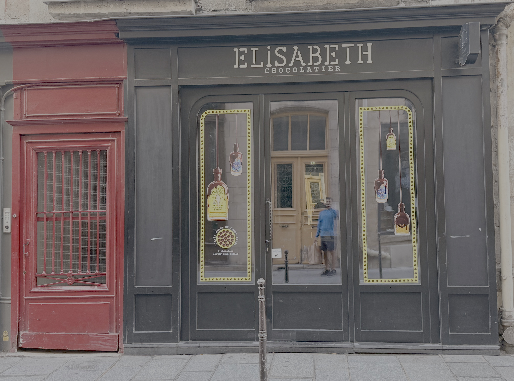
Elisabeth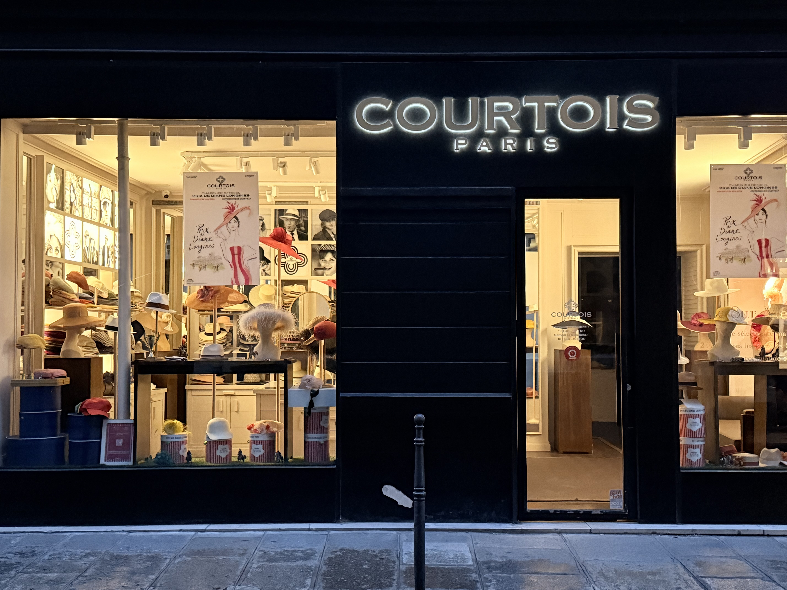
Courtois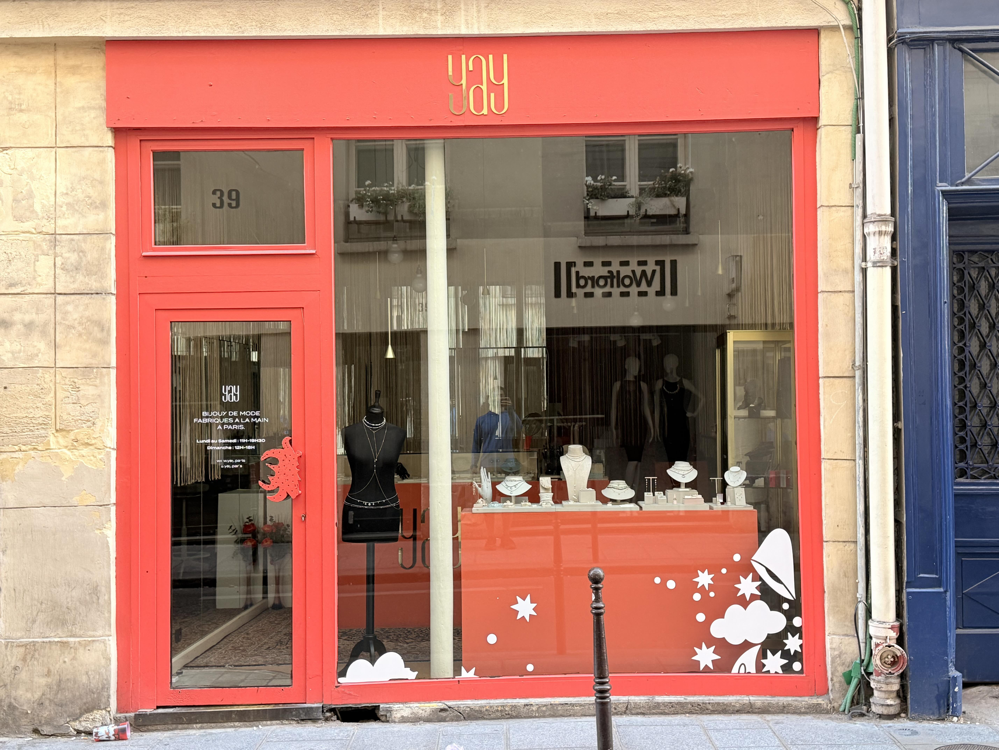
YayScents, Books & Curiosities
The smaller specialists are my favorites — a perfume maison that's been around longer than most countries, a wine bar tucked inside a bookshop, a boutique selling exactly one beautiful thing. This is where Le Marais shows its personality.
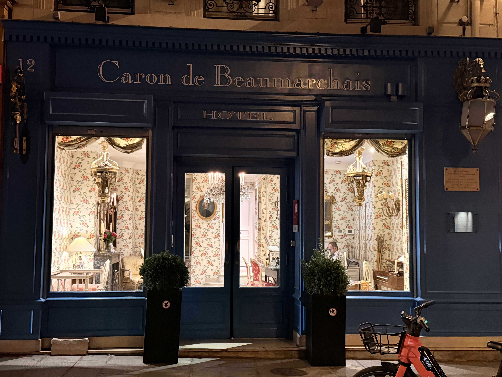
Caron — the perfume house Caron de Beauchêne
Caron de Beauchêne
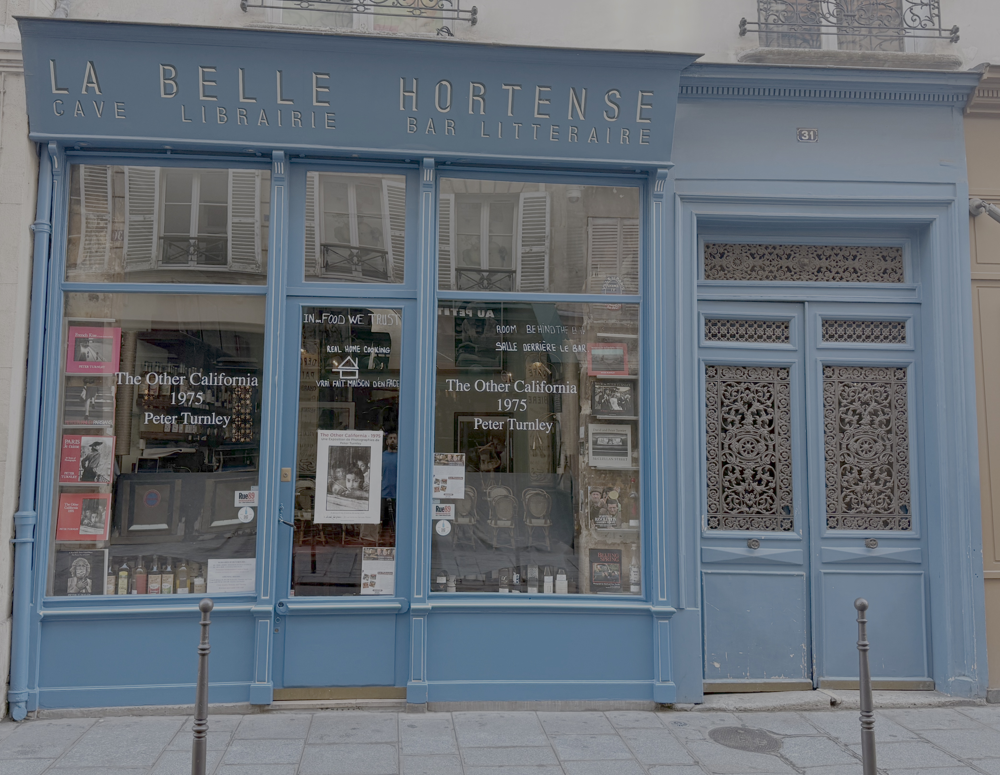
La Belle Hortense — wine & books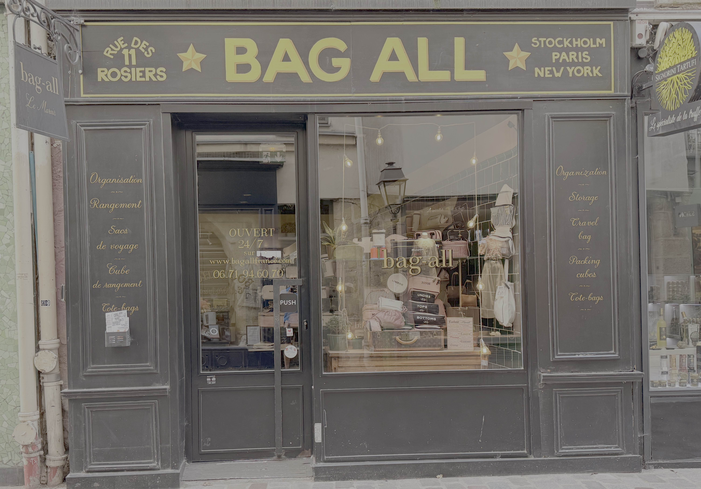
Bag-all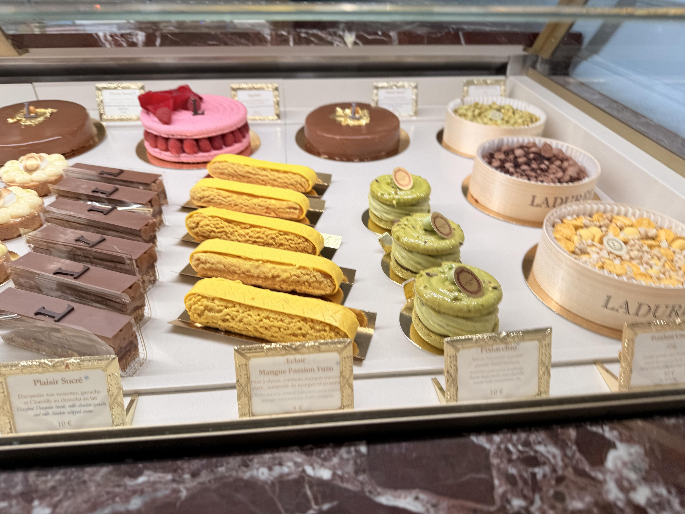
Ladurée Dragon & Tattoo
Dragon & Tattoo
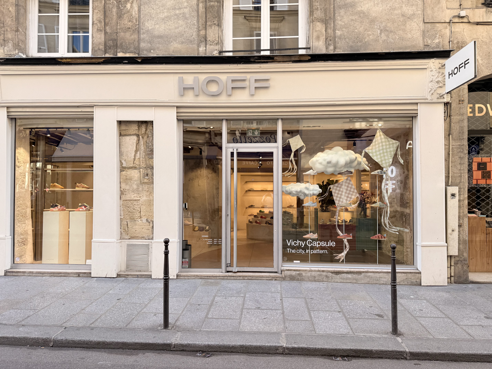
Hoff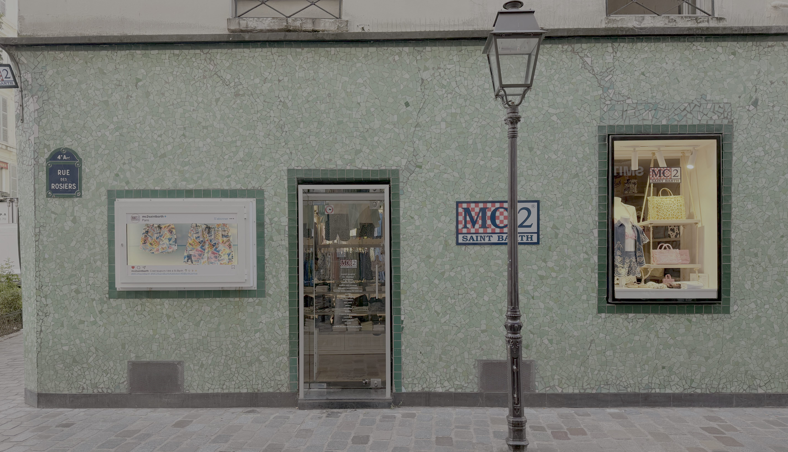
MC2 Hôtel Emile
Hôtel Emile
Am I Becoming a Parisophile?
I went to Le Marais for the history and the museums. I left thinking about awnings, hand-painted signage, and the exact shade of green someone chose for a door. There's a quiet pride in how Parisians present even the most everyday shop — and it's contagious.
Maybe that's Rick Steves' lesson sneaking up on me again: people here aren't chasing anyone else's dream. They're just making their corner of the world a little more beautiful, one storefront at a time. And if noticing that makes me a Parisophile — I'll take it.
If You Go
- Best time: Early morning, before the crowds, when shopkeepers are setting up
- How to see it: No map, no plan — just wander the side streets and look up
- Bring: A camera and an appetite; you'll use both
- Listen first: Rick Steves' Paris podcast episodes make great pre-trip company